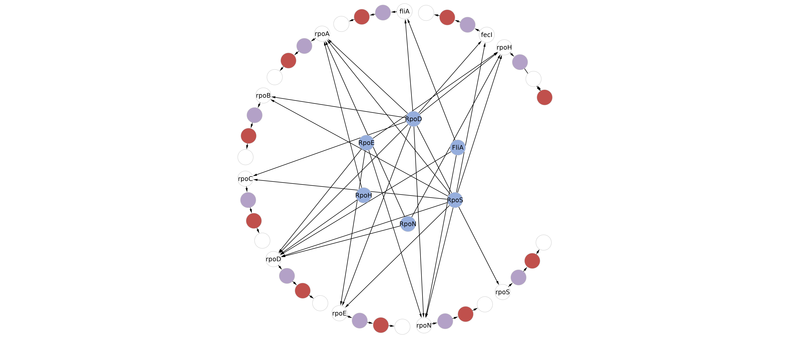

Genome Graphs¶
Metabolic networks have four columns. The first declares a unique name for the enzyme or enzymatic complex; the second declares a unique name for the reaction; the third column lists using comma unique names for substrates; and the last row list using comma unique names for products. To declare metabolites located at the periplasm or extracellular compartments, the user should employ the prefix “PER-” and “EX-”, respectively. Use spontaneous for non-enzymatic reactions.
Examples:
1 2 3 4 5 6 7 8 9 10 11 12 13 14 15 16 17 18 19 20 21 22 23 24 25 | SOURCE TARGET
araB-pro1 araB-rbs
araB-rbs araB-cds
araB-cds araA-rbs
araA-rbs araA-cds
araA-cds araD-rbs
araD-rbs araD-cds
araD-cds araD-ter1
araC-pro1 araC-BS-56-72
araC-BS-56-72 araC-rbs
araC-rbs araC-cds
araC-cds araC-ter1
araE-pro1 araE-rbs
araE-rbs araE-cds
araE-cds araE-ter1
araF-pro1 araF-rbs
araF-rbs araF-cds
araF-cds araG-rbs
araG-rbs araG-cds
araG-cds araH-rbs
araH-rbs araH-cds
araH-cds araH-ter1
|
OR
1 2 3 4 5 6 7 8 9 10 11 12 13 14 15 16 17 18 19 20 21 22 23 24 25 26 27 28 29 30 31 32 33 34 35 36 37 38 | SOURCE TARGET
rpoA-pro1 rpoA-rbs
rpoA-rbs rpoA-cds
rpoA-cds rpoA-ter1
rpoB-pro1 rpoB-rbs
rpoB-rbs rpoB-cds
rpoB-cds rpoC-rbs
rpoC-rbs rpoC-cds
rpoC-cds rpoC-ter1
rpoD-pro1 rpoD-rbs
rpoD-rbs rpoD-cds
rpoD-cds rpoD-ter1
rpoE-pro1 rpoE-rbs
rpoE-rbs rpoE-cds
rpoE-cds rpoE-ter1
rpoH-pro1 rpoH-rbs
rpoH-rbs rpoH-cds
rpoH-cds rpoH-ter1
rpoN-pro1 rpoN-rbs
rpoN-rbs rpoN-cds
rpoN-cds rpoN-ter1
rpoS-pro1 rpoS-rbs
rpoS-rbs rpoS-cds
rpoS-cds rpoS-ter1
fliA-pro1 fliA-rbs
fliA-rbs fliA-cds
fliA-cds fliA-ter1
fecI-pro1 fecI-rbs
fecI-rbs fecI-cds
fecI-cds fecI-ter1
|
Note
Visualization in Cytoscape. Colors and arrows remains to the user for customization. The network could be complemented with a description of sigma factor specifity for promoter, as the following network
Finally, execute the “Rules from metabolic network.ipynb” to obtain the Rules to model the defined network. If using a Sigma Factor-Promoter Interaction Network, the user could use “Rules from SigmaFactors x Architecture” to obtain the Rules to model both network at once. The complete rule-based model can be found in the arabinose folder (1st example) and in the sigma folder (2nd example) from the Network Biology Lab GitHub repository here.
Note
Kappa BioBrick Framework. The Rules for transcription and translation come from the work of Stewart and Wilson-Kanamori (See more here). A “pure” genome graph uses the originally defined rules, while a genome graph + sigma factor specifity uses a modified rules to model the release of the sigma factor from the RNA Polymerase at the transcription initiation. Please note the explicit modeling of the RNA Polymerase complex in the second example.
1 2 3 4 | Rule('docking_araB_pro1',
cplx(name = 'RNAP', dna = None) + dna(name = 'araB', type = 'pro1', prot = None, free = 'True') |
cplx(name = 'RNAP', dna = 1) % dna(name = 'araB', type = 'pro1', prot = 1, free = 'False'),
Parameter('fwd_docking_araB_pro1', 1), Parameter('rvs_docking_araB_pro1', 1))
|
OR
1 2 3 4 5 6 7 8 9 10 11 12 13 14 15 16 | # [rpoA, rpoA, rpoB, rpoC, rpoD] interacts with BS_rpoA_pro1
Rule('docking_1_rpoA_pro1',
prot(name = 'rpoA', dna = None, met = None, up = None, dw = 1) %
prot(name = 'rpoA', dna = None, met = None, up = 1, dw = 2) %
prot(name = 'rpoB', dna = None, met = None, up = 2, dw = 3) %
prot(name = 'rpoC', dna = None, met = None, up = 3, dw = 4) %
prot(name = 'rpoD', dna = None, met = None, up = 4, dw = None) +
dna(name = 'rpoA', type = 'pro1', prot = None, free = 'True', up = WILD, dw = WILD) |
prot(name = 'rpoA', dna = None, met = None, up = None, dw = 1) %
prot(name = 'rpoA', dna = None, met = None, up = 1, dw = 2) %
prot(name = 'rpoB', dna = None, met = None, up = 2, dw = 3) %
prot(name = 'rpoC', dna = None, met = None, up = 3, dw = 4) %
prot(name = 'rpoD', dna = 5, met = None, up = 4, dw = None) %
dna(name = 'rpoA', type = 'pro1', prot = 5, free = 'False', up = WILD, dw = WILD),
Parameter('fwd_docking_1_rpoA_rbs', 1),
Parameter('rvs_docking_1_rpoA_pro1', 0))
|
Note
Reversibility of reactions. Atlas writes irreversible Rules for each
interaction between the RNA Polymerase and a promoter. The Parameter('rvs_ReactionName', 0))
must be set to non-zero to define a reversible reaction. The remaining Rules
are irreversible without a way to define reversible reactions.
Note
Simulation. The model can be simulated only with the instantiation of
Monomers and Initials (More here).
Run Monomer+Initials+Observables from metabolic network.ipynb to obtain
automatically the necessary Monomers and Initials (including
proteins and enzymatic complexes). For initial genes, please refer to the
following example:
Plotting. The model can be observed only with the instantation of
Observables (More here).
Run Monomer+Initials+Observables from metabolic network.ipynb to obtain
automatically the all possible Observables for metabolites.